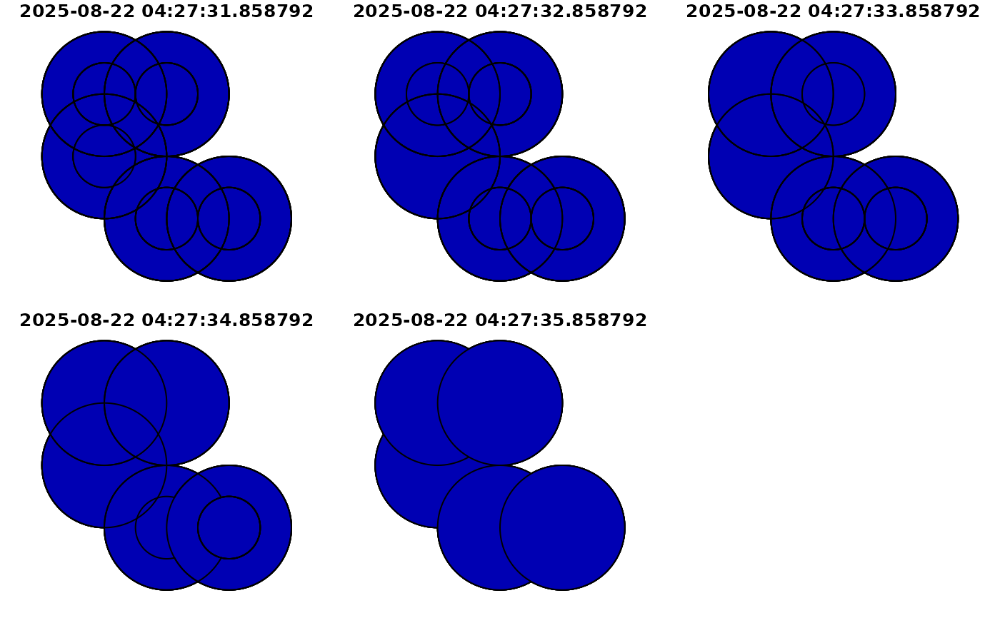

Combine or union feature geometries (including sftime objects)
Source: R/geom-transformers.R
geos_combine.RdCombine or union feature geometries (including sftime objects)
Arguments
- x
An object of class
sftime,sf,sfcorsfg.- y
An object of class
sftime,sf,sfcorsfg(optional).- ...
See
geos_combine.- by_feature
See
geos_combine.- is_coverage
See
geos_combine.
Value
If y is missing, st_union(x) returns a single geometry
with resolved boundaries, else the geometries for all unioned pairs of
x[i] and y[j].
Details
See geos_combine.
Examples
# union simple features in an sftime object
g <- st_sfc(st_point(c(1, 2)), st_point(c(1, 3)), st_point(c(2, 3)),
st_point(c(2, 1)), st_point(c(3, 1)))
tc <- Sys.time() + 1:5
x <- st_sftime(a = 1:5, g, time = tc)
# only x provided (no y)
plot(st_union(st_buffer(x, dist = 1)))
# with arguments x and y provided
plot(st_union(st_buffer(x, dist = 1), st_buffer(x, dist = 0.5)), "a")
#> Warning: attribute variables are assumed to be spatially constant throughout all geometries
#> [INFO] Fewer time stamps in the data than asked for; argument 'number' set to: 5

#> NULL